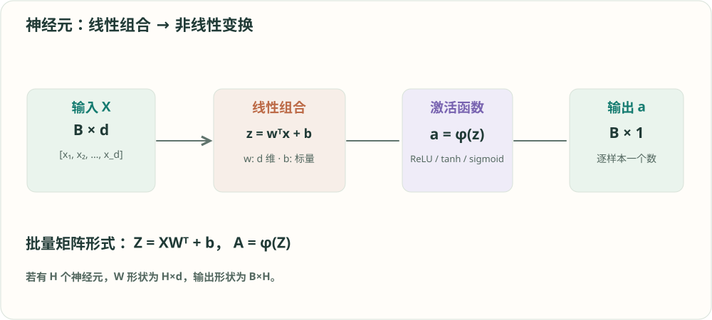
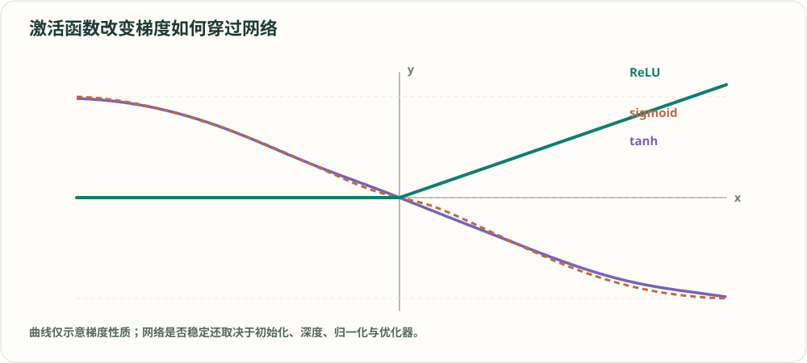
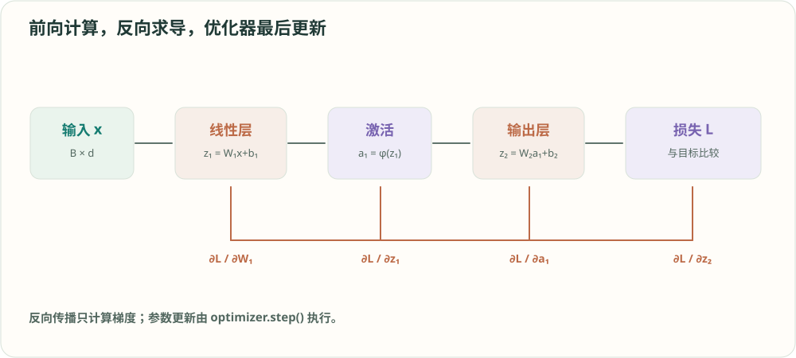
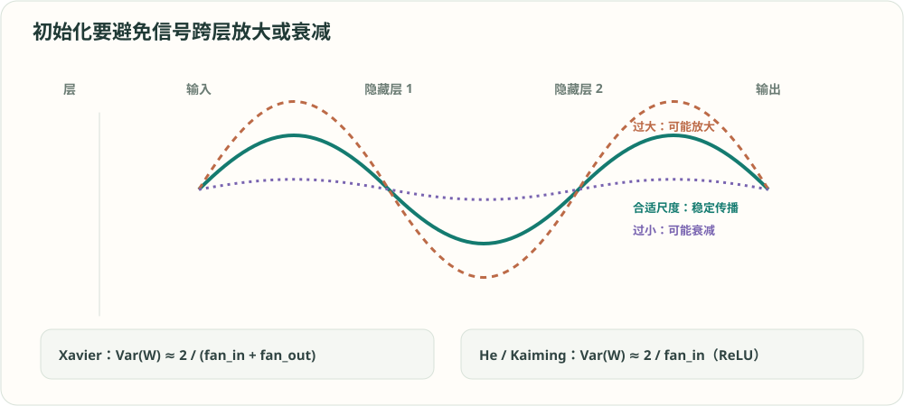
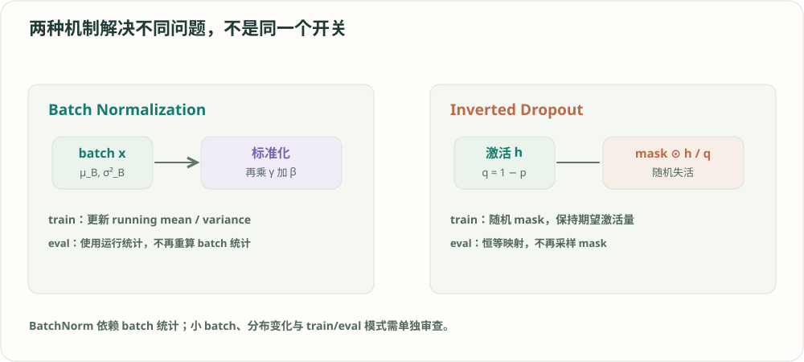

神经网络基础：从单个神经元到反向传播
神经网络把线性变换与非线性激活逐层组合，利用链式法则计算梯度，再由优化器更新参数。理解张量形状、梯度传播、初始化、BatchNorm 和 Dropout，才能解释网络为何学得动、何时失稳。
01 · 从线性模型到分层表示
线性回归或逻辑回归直接把输入特征映射到一个输出。神经网络将这个映射拆成多层：每层先计算加权组合，再通过激活函数改变表示。浅层可能捕捉输入中的局部组合，后续层再对前面的表示进行组合；这些层次是否对应人类容易命名的“边缘、形状、语义”，取决于数据、任务与架构，不能当作每个网络都自动形成固定的语义层级。
网络深度并不自动带来更强泛化。层数、宽度、训练数据、优化过程、正则化和分布匹配共同决定效果。神经网络的核心计算仍是矩阵乘法、加法、非线性与梯度优化。

02 · 单个人工神经元：形状比比喻更重要
对一个样本向量 x∈Rᵈ，单个神经元计算 z=wᵀx+b，然后输出 a=φ(z)。w 是 d 维权重，b 是标量偏置，φ 是激活函数。若一次处理 B 个样本、H 个神经元，批量输入为 X∈R^(B×d)，权重矩阵为 W∈R^(H×d)，偏置为 b∈Rᴴ：
此时 Z,A∈R^(B×H)。理解维度可以迅速发现转置错误、广播错误和批次维度被 squeeze() 意外删除等问题。偏置在批次维度上广播，但不意味着每个样本都有一份独立偏置参数。
03 · 激活函数：让层的组合真正具有非线性
若所有层都只有仿射变换 Wx+b，多层复合仍能合并成一个仿射变换，因此深度本身没有增加函数族的非线性表达能力。激活函数打破这种等价关系。Sigmoid 将实数压到 (0,1)，常用于二分类概率输出的变换；Tanh 输出范围为 (−1,1)；ReLU 为 max(0,x)，正半轴导数为 1、负半轴导数为 0。

Sigmoid/Tanh 在绝对值很大时会饱和，导数接近零；ReLU 在正半轴不饱和，但负半轴梯度为零，部分神经元可能长期不激活。Leaky ReLU 为负半轴保留小斜率；GELU 使用平滑门控，在 Transformer 等架构中常见。没有一种激活函数在所有任务、深度和硬件条件下都必然最好。
“ReLU 解决梯度消失”是过度简化：它缓解了某些饱和梯度问题，但多层权重雅可比矩阵的连乘仍可能导致梯度爆炸或衰减。
04 · 反向传播：把链式法则应用到计算图
考虑一层隐藏层：z₁=W₁x+b₁，a₁=φ(z₁)，输出层 z₂=W₂a₁+b₂，损失为 L(z₂,y)。前向传播计算每个中间量；反向传播从损失开始，沿计算依赖反向求导。

令 δ₂=∂L/∂z₂，则输出层权重梯度为 ∂L/∂W₂=δ₂a₁ᵀ；隐藏层梯度为 δ₁=(W₂ᵀδ₂)⊙φ'(z₁)，进而 ∂L/∂W₁=δ₁xᵀ。对批量数据，还要按损失函数定义处理求和或平均，并保持矩阵维度一致。
反向传播只负责计算梯度，不负责更新参数。SGD、Adam 等优化器读取梯度并执行参数更新。Rumelhart、Hinton 与 Williams 在 1986 年的经典工作展示了通过误差反向传播调整连接权重、学习隐藏表示的过程。
05 · 梯度消失与爆炸：为什么初始化很重要
深层网络的梯度由多层 Jacobian 连乘组成。如果许多层的局部导数范数小于 1，梯度可能逐层衰减；若持续大于 1，梯度可能迅速放大。激活函数饱和、权重尺度、网络深度和数据分布都影响这个过程。初始化的目标之一，是让前向激活与反向梯度的尺度在层间不要系统性放大或衰减。

Glorot/Xavier 初始化常用 Var(W)≈2/(fan_in+fan_out)，适用于某些近似对称激活的假设；He/Kaiming 初始化对 ReLU 类激活常用 Var(W)≈2/fan_in。均值为零的随机初始化还打破同层神经元的参数对称性；若同层权重全部置零，神经元可能得到相同梯度而持续学成相同特征。
具体方差还取决于 fan-in/fan-out 定义、前向/反向保持目标、激活函数和权重矩阵存储约定。PyTorch 的 Linear 权重形状是 [fan_out, fan_in]，初始化函数按其文档约定计算 fan 值，不要在自定义矩阵乘法时忽略转置语义。
06 · Batch Normalization：训练统计与推理统计不同
对一个 mini-batch 中某个特征维的激活值，BatchNorm 先计算批均值与方差，再标准化，并用可学习参数 γ 与 β 缩放平移：
标准化后再计算 y=γ(x−μ_B)/√(σ²_B+ε)+β。训练模式下使用当前 batch 统计并更新运行统计；推理模式下通常使用训练期间累积的 running mean 与 running variance。BatchNorm 不等于对每个样本独立标准化，也不等于 LayerNorm。以 PyTorch BatchNorm1d 为例，训练前向使用有偏 batch 方差估计（correction=0），而更新 running variance 时使用无偏估计（correction=1）；两者服务于不同统计用途，不能把一条公式同时当作两者的实现细节。

BatchNorm 对小 batch、分布变化和 train/eval 模式较敏感；在序列或小批量任务中，LayerNorm、RMSNorm 等可能更合适。BatchNorm 的效果也不应简单归因于一个单一机制；原始论文提出了层输入归一化方案并报告了特定网络与数据上的实验收益。
07 · Dropout：训练时随机失活，推理时关闭
Dropout 以概率 p 将部分激活置零。常见 inverted dropout 训练时对保留的激活除以保留概率 q=1−p，使训练输出的期望与推理时恒等映射保持一致：
训练时不同迭代使用不同的子网络，能减少某些单元过度共适应；推理时不再采样 mask。Dropout 与 BatchNorm 不是同一个目的，二者的组合顺序也可能影响训练统计和表现，不能将 Linear → BatchNorm → ReLU → Dropout 宣称为所有网络的默认结构。
08 · 训练诊断：看激活、梯度与数据，而不只看 loss
当 loss 不下降时，依次检查标签与损失函数是否匹配、输出和目标形状、学习率、梯度是否为 NaN/Inf、激活分布、初始化、数据标准化和 batch 组成。梯度裁剪能限制某些爆炸梯度，但不能修复错误的数据流或不合理的模型结构。验证集表现变差可能是过拟合、分布偏移或训练/验证预处理不一致。
对于二分类，若使用 BCEWithLogitsLoss，模型输出应为未经过 sigmoid 的 logits；损失函数内部已包含数值稳定的 sigmoid 与交叉熵组合。多分类的 CrossEntropyLoss 同样通常接收未经过 softmax 的 logits。将 sigmoid/softmax 再套到这些损失之前，可能造成重复变换。
09 · 可运行实验：手工反向传播并用有限差分核验梯度
下面用一个小型 tanh 隐藏层网络手工实现前向与反向传播。对一个权重元素用中心有限差分估计数值梯度，并与链式法则计算的解析梯度比较。这是教学用 MLP，不是高性能训练实现。
import numpy as np
rng = np.random.default_rng(19)
X = rng.normal(size=(5, 3))
target = rng.normal(size=(5, 1))
W1 = rng.normal(scale=0.25, size=(4, 3))
b1 = np.zeros(4)
W2 = rng.normal(scale=0.25, size=(1, 4))
b2 = np.zeros(1)
def forward_loss(W1_value):
z1 = X @ W1_value.T + b1
a1 = np.tanh(z1)
prediction = a1 @ W2.T + b2
loss = 0.5 * np.mean((prediction - target) ** 2)
return loss, (z1, a1, prediction)
loss, (z1, a1, prediction) = forward_loss(W1)
n = X.shape[0]
d_prediction = (prediction - target) / n
dW2 = d_prediction.T @ a1
db2 = d_prediction.sum(axis=0)
da1 = d_prediction @ W2
dz1 = da1 * (1 - np.tanh(z1) ** 2)
dW1 = dz1.T @ X
db1 = dz1.sum(axis=0)
# 中心有限差分：检查 W1[0, 0]
eps = 1e-5
plus, minus = W1.copy(), W1.copy()
plus[0, 0] += eps
minus[0, 0] -= eps
numeric = (forward_loss(plus)[0] - forward_loss(minus)[0]) / (2 * eps)
analytic = dW1[0, 0]
print("loss:", round(float(loss), 6))
print("analytic / numeric:", analytic, numeric)
print("absolute gradient error:", abs(analytic - numeric))
np.testing.assert_allclose(analytic, numeric, rtol=1e-4, atol=1e-6)
assert dW2.shape == W2.shape and db1.shape == b1.shape需要 Python 3.10+ 与 NumPy。有限差分是梯度实现的数值检查，不是训练性能评估；真实网络还需要对更多参数、批次、激活和边界条件进行测试。
10 · 来源与版本边界
神经网络训练的稳定性不是由单一技巧保证。初始化公式依赖激活与 fan 约定；BatchNorm 的训练与推理统计不同；Dropout 的随机失活只发生在训练模式。应结合架构、batch size、优化器和数据分布验证，而非机械套用“标准模块顺序”。
- Rumelhart, Hinton & Williams (1986), Learning representations by back-propagating errors
- Glorot & Bengio (2010), Xavier 初始化与深层梯度分析
- He et al. (2015), ReLU 网络与 Kaiming 初始化
- Ioffe & Szegedy (2015), Batch Normalization 原始论文
- PyTorch BatchNorm1d：batch 方差与 running variance 的估计方式
- Srivastava et al. (2014), Dropout 原始论文
- PyTorch 初始化 API：Xavier、Kaiming 与 fan 约定